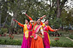
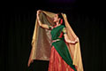
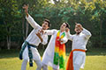
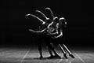
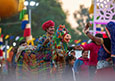

Explore a variety of dance styles, from graceful classical to energetic south indian style, and
everything in between.
Whether you're looking to master elegant moves or express yourself with vibrant rhythms, we have a
style for everyone!

Our Classical Lessons
Kathak, one of India's classical dance styles, is a beautiful blend of rhythm, grace, and
storytelling.
Rooted in ancient traditions, it features intricate footwork, mesmerizing spins, and expressive
gestures that narrate timeless tales of devotion, love, and mythology.
With its rich cultural heritage, Kathak bridges the past and present, offering a captivating
experience of art and emotion.

Our Semi classical Lessons
Semi-classical dance is a fusion of traditional classical dance forms with modern expressions and
movements. It blends the grace, technique,
and storytelling of classical styles like Bharatanatyam, Kathak, or Odissi with more
contemporary music and choreography. This style offers flexibility,
allowing dancers to showcase their creativity while maintaining the elegance and poise of
classical dance,
making it accessible to a wider audience. Semi-classical dance is an exciting and dynamic way to
experience the beauty of classical traditions while adding a modern twist.

Our Bollywood Lessons
Bollywood dance is a vibrant and energetic style that blends traditional Indian dance forms with
contemporary styles like hip-hop, jazz, and funk.
Inspired by the lively choreography seen in Indian film music, Bollywood dance is all about
expressing joy, passion, and celebration through dramatic movements, colorful costumes, and
lively music.
It incorporates a mix of expressive hand gestures, footwork, and hip movements, making it a fun
and engaging dance form for all ages.
Whether for a performance or a party, Bollywood dance brings a burst of energy and excitement to
any occasion.

Our Contemporary Lessons
Indian contemporary dance is a dynamic and expressive style that blends traditional Indian dance
forms with modern techniques and global influences.
It focuses on individual expression, emotional depth, and fluid movement, often incorporating
elements of ballet, jazz, and modern dance.
With an emphasis on storytelling and personal interpretation, Indian contemporary dancers
explore themes of identity, society, and culture while maintaining a connection to India's rich
dance heritage.
This style allows for greater freedom of movement and creativity, making it a powerful and
evolving art form that resonates with audiences worldwide.

Our Folk Lessons
Indian folk dance styles are a vibrant reflection of the country's diverse cultures, traditions,
and celebrations. Each region of India boasts its own unique folk dance,
often performed during festivals, weddings, and community events. From the energetic Garba and
Dandiya of Gujarat to the graceful Bhangra from Punjab,
the rhythmic Kathakali from Kerala to the joyous Ghoomar from Rajasthan, Maharashtra’s folk
dances
like Lavani and Tamasha add a dynamic and energetic flair to the rich cultural tapestry,
showcasing powerful rhythms and expressive movements. These dances are deeply rooted in the
local customs and stories.
With colorful costumes, lively music, and joyful movements, Indian folk dances offer a beautiful
and engaging way to experience the rich cultural heritage of India.
Our Western Dance Lessons
Western dance styles encompass a wide range of vibrant and energetic forms, including jazz,
hip-hop, contemporary, and ballroom. Originating in Europe and the Americas,
these styles are characterized by their dynamic movements, rhythmic precision, and expressive
artistry. Whether it's the fluid grace of contemporary dance, the structured elegance of waltz,
or the electrifying energy of hip-hop, Western dance offers a platform for creativity and
storytelling through movement, appealing to diverse audiences and dancers alike.